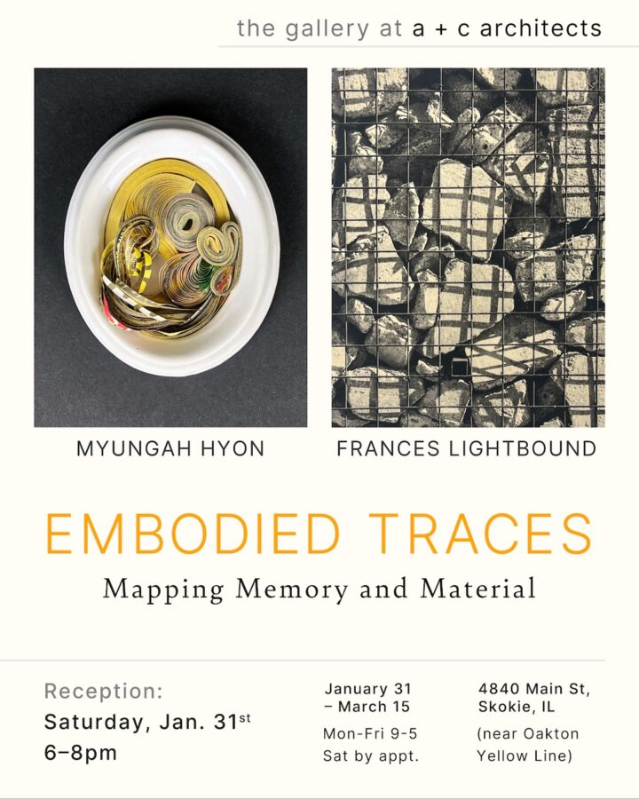

Myungah Hyon & Frances Lightbound: Embodied Traces
Embodied Traces: Mapping Memory and Material presents new work by artists Myungah Hyon and Frances Lightbound, whose individual yet complementary practices explore connections between materiality, memory, and perception. With a shared interest in print, sculpture, and architectural space, Hyon and Lightbound’s work weaves together paper, ceramic, print, and architecture to reveal layered histories and invite fresh ways of experiencing space.
Myungah Hyon’s work explores the idea of “connecting” through mixed media. Her recent practice combines printmaking, intricate paper structures, and ceramics, using material limitations and imprinted forms to create sculptural works that function as vessels of memory and invite immersive engagement with form. Hyon is a multidisciplinary artist and educator born in Seoul, Korea, and a faculty member in the Department of Printmedia at SAIC. Her work has been exhibited internationally, including at Datz Museum (Korea), Printed Matter Inc. (NY), and factory2 (Seoul). She is the author of Book Book (DREAMER Fty) and Kaleido _
Book (Candor Arts), and has received honors such as SAIC’s Faculty Enrichment Grant and the Peter Williams Award from Ox-Bow, as well as residencies in the U.S., Korea, and Europe.
Frances Lightbound explores printmaking in two and three dimensions, exploring relationships between time, bodies, and buildings. Her screen prints and photogravure reconfigure fragments of the built environment, and deeply embossed graphite rubbings create evocative, tactile records of architectural presence and spatial experience. Lightbound’s work has been exhibited nationally and internationally at venues in the US and Europe, with recent solo exhibitions at Rule Gallery (Marfa, TX) and the John David Mooney Foundation (Chicago), and group shows in St Louis and Raleigh, NC. She is a 2026–27 artist in residence at the Cliff Dwellers, Chicago. Born in the UK and based in Chicago, Lightbound is a faculty member in Printmedia and
Photography at the School of the Art Institute of Chicago.